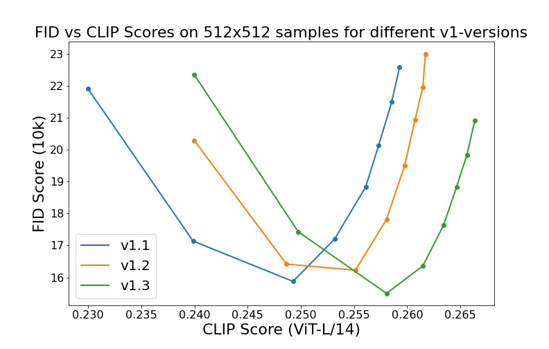

README from CompViz/stable-diffusion#
Stable Diffusion was made possible thanks to a collaboration with Stability AI and Runway and builds upon our previous work:
High-Resolution Image Synthesis with Latent Diffusion Models
Robin Rombach*,
Andreas Blattmann*,
Dominik Lorenz\,
Patrick Esser,
Björn Ommer
CVPR '22 Oral#
which is available on GitHub. PDF at arXiv. Please also visit our Project page.
 Stable Diffusion is a latent text-to-image diffusion
model. Thanks to a generous compute donation from
Stability AI and support from
LAION, we were able to train a Latent Diffusion Model on
512x512 images from a subset of the LAION-5B
database. Similar to Google's Imagen, this
model uses a frozen CLIP ViT-L/14 text encoder to condition the model on text
prompts. With its 860M UNet and 123M text encoder, the model is relatively
lightweight and runs on a GPU with at least 10GB VRAM. See
this section below and the
model card.
Stable Diffusion is a latent text-to-image diffusion
model. Thanks to a generous compute donation from
Stability AI and support from
LAION, we were able to train a Latent Diffusion Model on
512x512 images from a subset of the LAION-5B
database. Similar to Google's Imagen, this
model uses a frozen CLIP ViT-L/14 text encoder to condition the model on text
prompts. With its 860M UNet and 123M text encoder, the model is relatively
lightweight and runs on a GPU with at least 10GB VRAM. See
this section below and the
model card.
Requirements#
A suitable conda environment named ldm can be created and
activated with:
Note that the first line may be abbreviated conda env create, since conda will
look for environment.yml by default.
You can also update an existing latent diffusion environment by running
Stable Diffusion v1#
Stable Diffusion v1 refers to a specific configuration of the model architecture that uses a downsampling-factor 8 autoencoder with an 860M UNet and CLIP ViT-L/14 text encoder for the diffusion model. The model was pretrained on 256x256 images and then finetuned on 512x512 images.
*Note: Stable Diffusion v1 is a general text-to-image diffusion model and therefore mirrors biases and (mis-)conceptions that are present in its training data. Details on the training procedure and data, as well as the intended use of the model can be found in the corresponding model card. Research into the safe deployment of general text-to-image models is an ongoing effort. To prevent misuse and harm, we currently provide access to the checkpoints only for academic research purposes upon request. This is an experiment in safe and community-driven publication of a capable and general text-to-image model. We are working on a public release with a more permissive license that also incorporates ethical considerations.*
Request access to Stable Diffusion v1 checkpoints for academic research
Weights#
We currently provide three checkpoints, sd-v1-1.ckpt, sd-v1-2.ckpt and
sd-v1-3.ckpt, which were trained as follows,
sd-v1-1.ckpt: 237k steps at resolution256x256on laion2B-en. 194k steps at resolution512x512on laion-high-resolution (170M examples from LAION-5B with resolution>= 1024x1024).sd-v1-2.ckpt: Resumed fromsd-v1-1.ckpt. 515k steps at resolution512x512on "laion-improved-aesthetics" (a subset of laion2B-en, filtered to images with an original size>= 512x512, estimated aesthetics score> 5.0, and an estimated watermark probability< 0.5. The watermark estimate is from the LAION-5B metadata, the aesthetics score is estimated using an improved aesthetics estimator).sd-v1-3.ckpt: Resumed fromsd-v1-2.ckpt. 195k steps at resolution512x512on "laion-improved-aesthetics" and 10\% dropping of the text-conditioning to improve classifier-free guidance sampling.
Evaluations with different classifier-free guidance scales (1.5, 2.0, 3.0, 4.0, 5.0, 6.0, 7.0, 8.0) and 50 PLMS sampling steps show the relative improvements of the checkpoints: 
Text-to-Image with Stable Diffusion#


Stable Diffusion is a latent diffusion model conditioned on the (non-pooled) text embeddings of a CLIP ViT-L/14 text encoder.
Sampling Script#
After obtaining the weights, link them
mkdir -p models/ldm/stable-diffusion-v1/
ln -s <path/to/model.ckpt> models/ldm/stable-diffusion-v1/model.ckpt
and sample with
By default, this uses a guidance scale of --scale 7.5,
Katherine Crowson's implementation
of the PLMS sampler, and renders images of
size 512x512 (which it was trained on) in 50 steps. All supported arguments are
listed below (type python scripts/txt2img.py --help).
usage: txt2img.py [-h] [--prompt [PROMPT]] [--outdir [OUTDIR]] [--skip_grid] [--skip_save] [--ddim_steps DDIM_STEPS] [--plms] [--laion400m] [--fixed_code] [--ddim_eta DDIM_ETA] [--n_iter N_ITER] [--H H] [--W W] [--C C] [--f F] [--n_samples N_SAMPLES] [--n_rows N_ROWS]
[--scale SCALE] [--from-file FROM_FILE] [--config CONFIG] [--ckpt CKPT] [--seed SEED] [--precision {full,autocast}]
optional arguments:
-h, --help show this help message and exit
--prompt [PROMPT] the prompt to render
--outdir [OUTDIR] dir to write results to
--skip_grid do not save a grid, only individual samples. Helpful when evaluating lots of samples
--skip_save do not save individual samples. For speed measurements.
--ddim_steps DDIM_STEPS
number of ddim sampling steps
--plms use plms sampling
--laion400m uses the LAION400M model
--fixed_code if enabled, uses the same starting code across samples
--ddim_eta DDIM_ETA ddim eta (eta=0.0 corresponds to deterministic sampling
--n_iter N_ITER sample this often
--H H image height, in pixel space
--W W image width, in pixel space
--C C latent channels
--f F downsampling factor
--n_samples N_SAMPLES
how many samples to produce for each given prompt. A.k.a. batch size
(note that the seeds for each image in the batch will be unavailable)
--n_rows N_ROWS rows in the grid (default: n_samples)
--scale SCALE unconditional guidance scale: eps = eps(x, empty) + scale * (eps(x, cond) - eps(x, empty))
--from-file FROM_FILE
if specified, load prompts from this file
--config CONFIG path to config which constructs model
--ckpt CKPT path to checkpoint of model
--seed SEED the seed (for reproducible sampling)
--precision {full,autocast}
evaluate at this precision
Note: The inference config for all v1 versions is designed to be used with
EMA-only checkpoints. For this reason use_ema=False is set in the
configuration, otherwise the code will try to switch from non-EMA to EMA
weights. If you want to examine the effect of EMA vs no EMA, we provide "full"
checkpoints which contain both types of weights. For these, use_ema=False will
load and use the non-EMA weights.
Diffusers Integration#
Another way to download and sample Stable Diffusion is by using the diffusers library
# make sure you're logged in with `huggingface-cli login`
from torch import autocast
from diffusers import StableDiffusionPipeline, LMSDiscreteScheduler
pipe = StableDiffusionPipeline.from_pretrained(
"CompVis/stable-diffusion-v1-3-diffusers",
use_auth_token=True
)
prompt = "a photo of an astronaut riding a horse on mars"
with autocast("cuda"):
image = pipe(prompt)["sample"][0]
image.save("astronaut_rides_horse.png")
Image Modification with Stable Diffusion#
By using a diffusion-denoising mechanism as first proposed by SDEdit, the model can be used for different tasks such as text-guided image-to-image translation and upscaling. Similar to the txt2img sampling script, we provide a script to perform image modification with Stable Diffusion.
The following describes an example where a rough sketch made in Pinta is converted into a detailed artwork.
python scripts/img2img.py --prompt "A fantasy landscape, trending on artstation" --init-img <path-to-img.jpg> --strength 0.8
Here, strength is a value between 0.0 and 1.0, that controls the amount of noise that is added to the input image. Values that approach 1.0 allow for lots of variations but will also produce images that are not semantically consistent with the input. See the following example.
Input

Outputs


This procedure can, for example, also be used to upscale samples from the base model.
Comments#
-
Our codebase for the diffusion models builds heavily on OpenAI's ADM codebase and https://github.com/lucidrains/denoising-diffusion-pytorch. Thanks for open-sourcing!
-
The implementation of the transformer encoder is from x-transformers by lucidrains.
BibTeX#
@misc{rombach2021highresolution,
title={High-Resolution Image Synthesis with Latent Diffusion Models},
author={Robin Rombach and Andreas Blattmann and Dominik Lorenz and Patrick Esser and Björn Ommer},
year={2021},
eprint={2112.10752},
archivePrefix={arXiv},
primaryClass={cs.CV}
}
Created: August 24, 2022